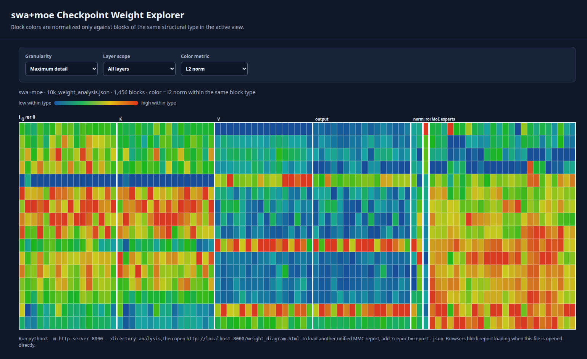
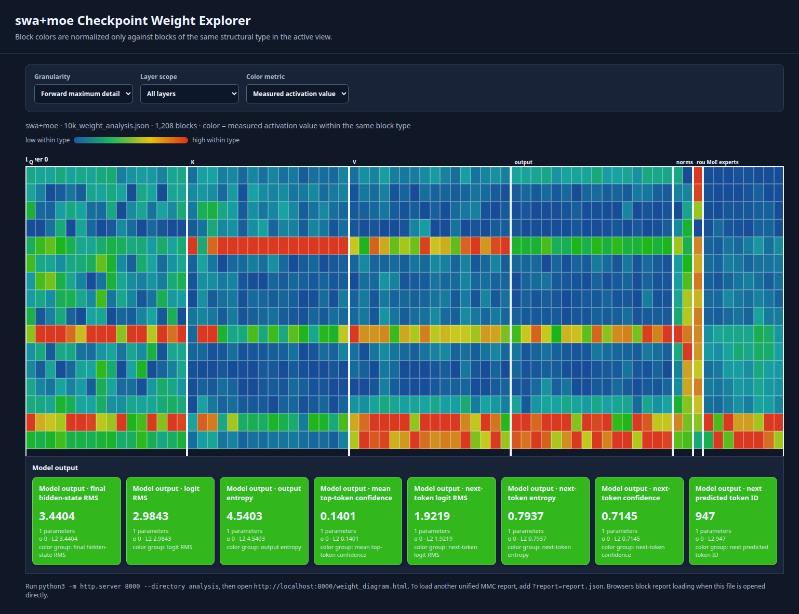

Technical summary
The 10K model alternates local SWA refinement with three large global-attention refreshes. Weight geometry suggests that division of labor; a real 4.01-second prompt confirms it through residual-update measurements. The model then makes a correct, high-confidence first next-token prediction on that prompt. The 128K model retains the same MoE structure but replaces global full attention with compressed-global (NSA-style) attention.
Released model families
| Model | Context and attention | Transformer shape | Routing |
|---|---|---|---|
| 10K SWA + MoE | 10,240 tokens; SWA with full attention every fifth layer | 16 layers · 16 heads · width 1,024 · 479.4M trainable parameters | 8 experts/layer · top-2 routing |
| 128K NSA + MoE | 131,072 tokens; compressed-global attention at layers 4 and 9 | 12 layers · 12 heads · width 768 · 375.3M trainable parameters | 16 experts/layer · top-1 bias routing |
The 128K NSA layers have the same learned projection shapes and parameter count as local SWA layers. Their difference is computational: K/V positions are stride-72 compressed during global attention.
Most parameters live in MoE experts
Across the 10K stack, expert-matrix magnitude declines through the early local layers, jumps after the first global refresh, and rises overall in deeper layers. This is capacity geometry, not direct proof of expert output strength; routing and nonlinear gating determine the realized update.
Weight geometry exposes repeated structure
The maximum-detail diagram colors each corresponding parameter block relative to that same block in the other layers. It makes outliers visible without treating unrelated tensor types as comparable.

Global refresh layers make the largest attention writes
On the first 3,105 interleaved tokens (4.01 seconds) of the real sanctsound_hi01_01_015542.npy prompt, full-attention layers 4, 9, and 14 update the residual stream by 1.00×, 0.89×, and 0.98× its incoming RMS. Typical middle SWA layers update it by only 0.03×–0.15×. Layer 15 is an additional strong local writer at 0.92×.
Raw attention L2 norm predicts this weakly (Pearson r = 0.25, excluding layer 0). This is why weight analysis is useful for hypotheses but activation measurements are needed for functional claims.

MoE routing remains broad on this prompt
The largest selected-expert share is about 15%, close to the 12.5% uniform baseline for eight experts. Router entropy becomes sharper in layers 3 and 15 (1.27 and 1.46 nats; maximum ln(8) ≈ 2.08), but no expert monopolizes traffic. Later expert weights have a moderate relationship to MoE residual update (r = 0.53), not a deterministic one.
Output-head case study: the next token is correct
The output head is tied to the 9,219 × 1,024 token embedding matrix. Over the complete prompt, mean top-token confidence is 14.0%; at the prompt boundary, the first generated token is sharply predicted.
The expected next codebook position is codebook 0. The predictable nine-codebook interleaving cadence likely contributes to this confidence, so this is a correctness case study—not a measure of semantic audio understanding or overall generation quality.
How to reproduce and inspect
The unified reports contain tensor, head, and forward-pass measurements. Use the interactive explorer to change hierarchy and color reference groups.
PYTHONPATH=. .venv/bin/python scripts/analyze_checkpoint_weights.py \
/path/to/best_model.pt --json-out analysis/model_weight_analysis.json
PYTHONPATH=. .venv/bin/python scripts/measure_forward_branches.py \
/path/to/best_model.pt --tokens /path/to/sample.npy \
--sequence-length 3105 --json-out analysis/forward.jsonThe interactive explorer is not included in this public release. The diagrams above are static exports of its structure, layer, expert, head, and forward-activation views.
Limits and next measurements
This release note’s activation and output claims come from one 4.01-second prompt. They should be repeated across multiple acoustic contexts, prompt positions, and complete generated continuations. The next useful additions are dataset-wide next-token calibration, codebook-conditioned accuracy, expert-selection stability, attention-map analysis, and targeted ablations of global refresh layers.